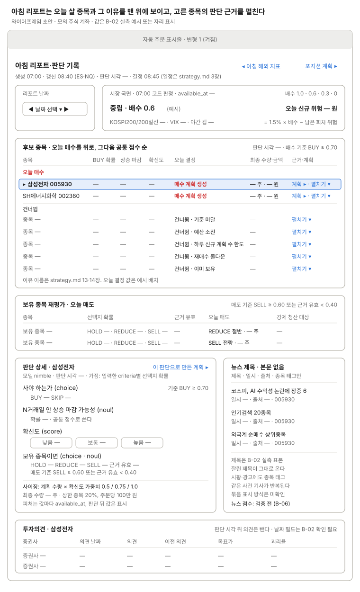

아침 리포트·판단 기록
그날 리포트, jev 판단과 근거, 사이징 결과를 보여 준다.

위에서 국면·배수와 오늘 신규 위험, 후보 표의 오늘 결정(매수 계획 생성 또는 건너뜀과 이유)과 최종 수량·금액, 보유 종목 재평가를 보고, 행을 고르면 아래에 그 종목의 질문별 확률과 사이징, 뉴스 제목, 투자의견이 나오고, "이 판단으로 만든 계획 ▸"으로 포지션 계획에 간다(업무 흐름 1). 값마다 기준 시각(available_at, 판단 시각)을 붙인다.
쓰는 공통 UI
상태
| 상태 | 보일 것 |
|---|---|
| 평소 | 표시줄 변형 1. 오늘 매수 행을 위로 모으고, 오늘 결정·최종 수량·금액과 "계획 ▸" 링크를 보인다 |
| 후보는 있으나 모두 건너뜀 | 오늘 매수 묶음 자리에 "오늘 새 계획 없음". 행마다 건너뜀 이유(기준 미달, 예산 소진, 하루 신규 계획 수 한도, 재매수 쿨다운, 이미 보유) |
| Ollama 장애(타임아웃·형식 오류) | 표시줄 변형 4. 후보 표와 판단 상세 자리에 "오늘 판단 없음 — 신규 매수·jev 매도 건너뜀, 강제 청산은 동작" |
| 대사 불일치 | 표시줄 변형 4. 후보 표 위에 이유와 대사 결과 링크. jev 판단은 보이되 오늘 결정은 모두 건너뜀 |
| 일일 손실 한도 | 표시줄 변형 4. 오늘 결정은 모두 건너뜀, 이유는 "일일 손실 한도" |
| 리셋 판정 | 표시줄 변형 3. 오늘 결정 없음, 진행 중 계획은 취소로 닫힘, 대사 결과 링크 |
| 자동 주문 꺼짐(사람이 끔) | 표시줄 변형 2. 판단은 기록하되 오늘 결정은 모두 건너뜀 |
| 폭락 국면(배수 0) | 국면 카드에 배수 0과 오늘 신규 위험 0 원. 오늘 결정은 "건너뜀 · 예산 소진" |
| 토큰 발급·데이터 수집 실패(14장 0번) | 오늘 결정 없음. 토큰 실패는 강제 청산도 불가라 위험색으로 강조. 표시줄 변형은 미정 |
| 판단 시각 뒤 값이 섞임 | 피처 펼치기에서 그 값에 표시를 붙인다 |
| 리포트 생성 전(07:00 전)·없는 날짜 | 카드 자리에 "리포트 생성 전" 또는 "이 날짜 리포트 없음" |
화면 규칙
- 보여 줄 것: 시장 국면과 배수, 후보별 피처, 질문별 선택지 확률(BUY/SKIP, HOLD/REDUCE/SELL, 확신도), 기준값 통과 여부, 뉴스 제목, 투자의견
- 데이터:
morning_reports,decisions,market_regimes,news_articles. 뉴스는 제목·일시·출처·종목코드만. 투자의견은 증권사·의견·이전 의견·목표가·괴리율 - 미확인: jev 응답 모양(입력한 criteria 기준, Ollama 샘플로 확인 예정)
- 주의: 뉴스 본문·요약을 둘 수 없다. 종목 태그에 시황·광고가 섞이고 같은 사건 기사가 반복된다. Ollama가 실패하면 그날 판단이 없다